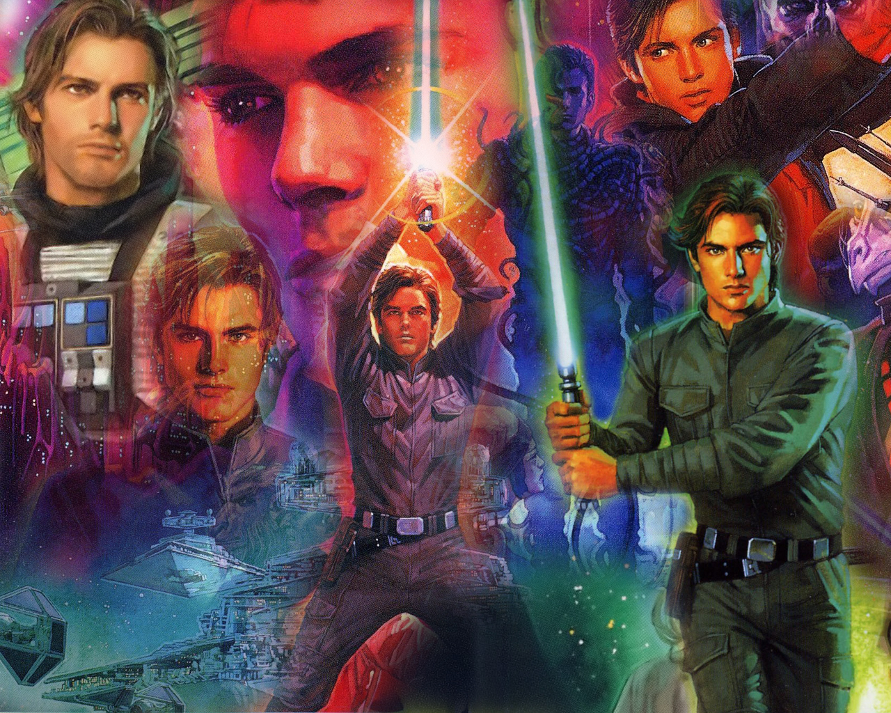
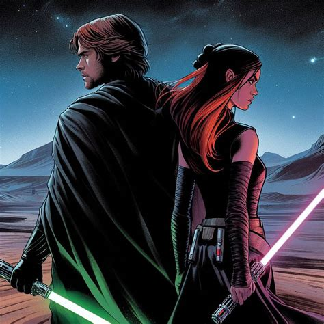
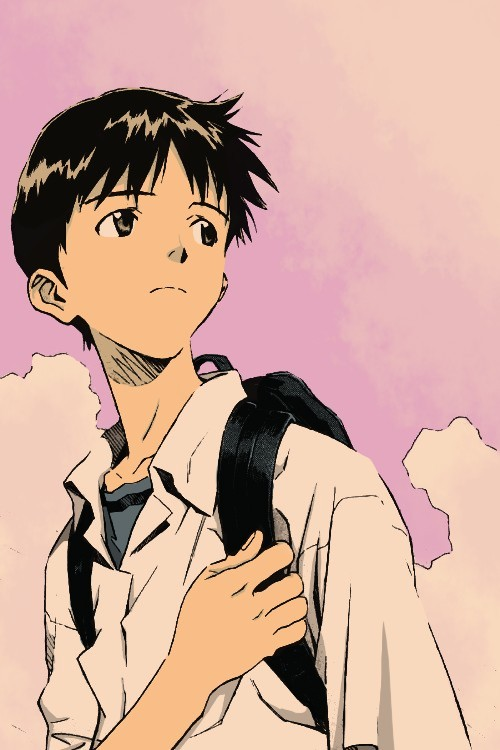
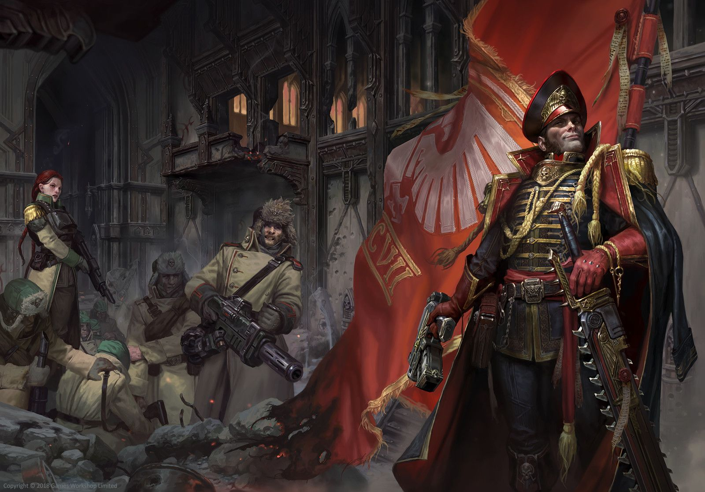
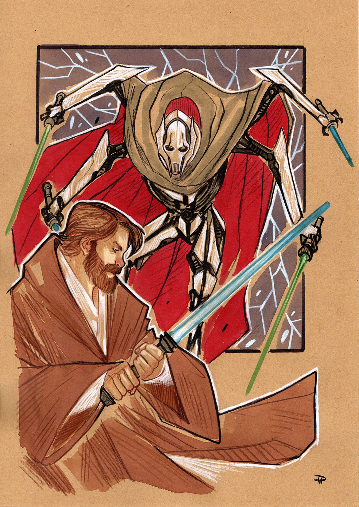
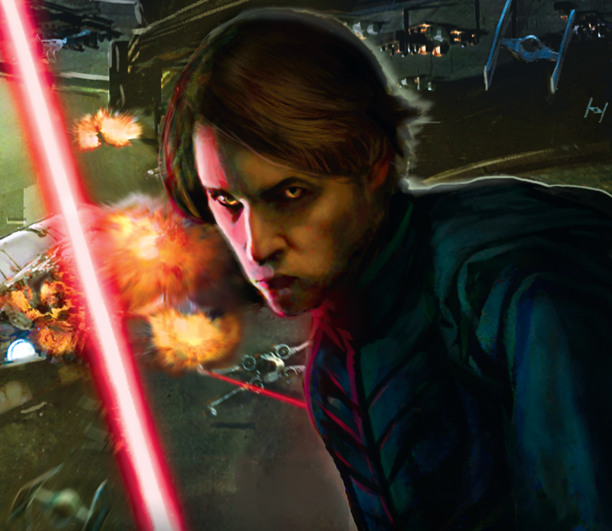

Fics
Me encanta leer fanfics en internet. Además, también escribo algun fic yo mismo! Mi página favorita para leer fics es Archive of Our Own. Algunos de los fandoms que me interesan más en este sentido son Evangelion, Mass Effect y, por encima de todos, Star Wars! A continuación, añado algunas recomendaciones.
The Imperative of Victory
Escrito por mí!!!
The New Republic has collapsed under the weight of the ruthless Yuuzhan Vong. But even in this darkest hour, the Force has a card on its sleeve. Jacen Solo is sent back 40 years in the past. Finding himself in the middle of the Clone Wars, Jacen must carve his own path to victory against the alien invaders. No matter the cost.
"The Imperative of Victory" es mi último fic. Lo empecé a escribir en 2023, y aún no está acabado. Cada mes intento postear un nuevo capítulo. En febrero de 2024, mi fic tenía 8963 "hits" (lecturas individuales) en ao3. Puedes leer el fic en ao3.
Shockwaves in the Unifying Force
Escrito por CzarZelinsky
In the aftermath of the Battle of Yuuzhan'tar, Mara Jade watches as her husband's life ebbs away. Leia and the Solo family have been destroyed in the destruction of Shimrra's citadel due to Nom Anor's treachery. Mara wished Luke could be saved, that their lives could have been lived in peace rather than turmoil. Mara just wished things had been different.
Increíble fic de Star Wars. Luke y Mara Jade viajan en el tiempo a La Venganza de los Sith para arruinar el día a Palpatine. Puedes leer el fic en ao3.
Alpha and Omega
Escrito por Xed Alpha
Long after the end came the next beginning. Something lost since time immemorial is about to return and two souls, so different and yet so alike, are set to clash.
Crossover fic de Eva con Mass Effect. La reina pirata Aria T'Loak encuentra un misterioso artefacto alienígena a la deriva en el espacio... el EVA 01. Puedes leer el fic aquí.
Cain & Abel: Service in His Shadow
Escrito por Mike Stormm
Commissar Ariel Abel didn't want much in life, just to do her job and be noticed for her hard labour. Too bad her career is about to be overshadowed by the enormous, and fraudulent, reputation of Hero of the Imperium, Commissar Ciaphas Cain.
Fic de Warhammer 40.000 ambientada en las novelas de Ciaphas Cain. La joven Krieger Ariel Abel es asignada como comisaria del 597º de Valhalla, donde conocerá al "héroe del Imperio". Puedes leer el fic aquí.
A Single Decision
Escrito por Timewatch
Aboard Invisible Hand, on that fateful day above Coruscant, Grievous makes a choice that causes a few little changes for the Separatists and Republic alike.
Fic de Star Wars ambientada en las Guerras Clon. La joven Jedi Esera es traicionada y acusada de crimenes que no cometió. Buscando justicia, se encontrará con un aliado inesperado: el general Grievous. Puedes leer el fic aquí.
Enter the Foreign
Escrito por Viari
Just before his fateful turn to the dark side, Anakin Skywalker is transported 70 years into the future, where he meets the ragtag remainder of the Jedi Order and becomes engulfed in their struggle against the new Sith Empire. Leading this fractured band of Jedi is Anakin’s grandson, Ben Skywalker, a young Knight still haunted by the deaths of his loved ones and by the betrayal of his former master, Darth Caedus. But the One Sith have not been idle in the years following the defeat of Caedus. Previously hidden in the shadows, they now stand on the brink of galactic domination, led there by the powerful and enigmatic Darth Krayt. As the two sides hurtle toward a final confrontation, will Anakin be able to separate himself from the shadow of Darth Vader? Or is it simply a matter of destiny – perhaps even the will of the Force – that the Chosen One and his scions should fall…?
UA de Star Wars ambientada en 51 ABY. Anakin Skywalker es transplantado a un futuro donde los Sith controlan la galáxia. La única esperanza es Ben, hijo de Luke Skywalker. Puedes leer el fic aquí.